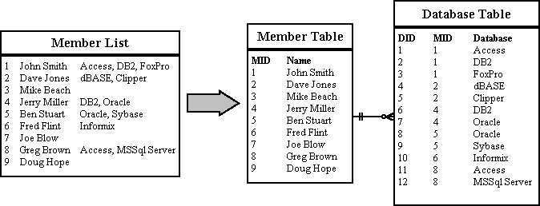
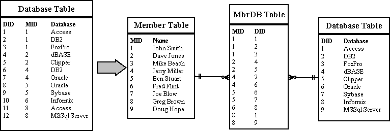
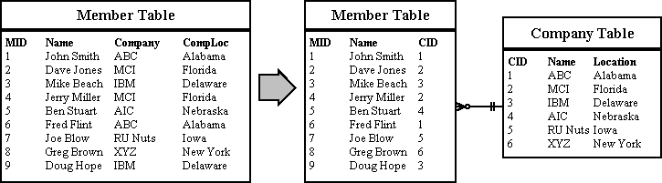
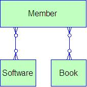
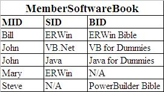
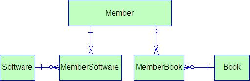
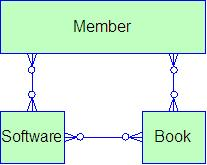
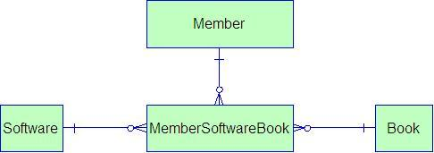
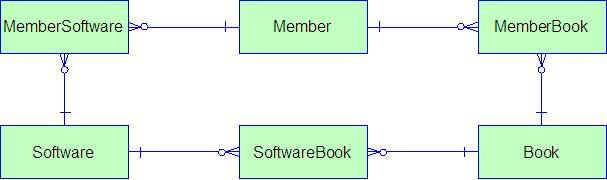

| 1NF | Eliminate Repeating Groups - Make a separate table for each set of related attributes, and give each table a primary key. |
|---|---|
| 2NF | Eliminate Redundant Data - If an attribute depends on only part of a multi-valued key, remove it to a separate table. |
| 3NF | Eliminate Columns Not Dependent On Key - If attributes do not contribute to a description of the key, remove them to a separate table. |
| BCNF | Boyce-Codd Normal Form - If there are non-trivial dependencies between candidate key attributes, separate them out into distinct tables. |
| 4NF | Isolate Independent Multiple Relationships - No table may contain two or more 1:n or n:m relationships that are not directly related. |
| 5NF | Isolate Semantically Related Multiple Relationships - There may be practical constrains on information that justify separating logically related many-to-many relationships. |
| ONF | Optimal Normal Form - a model limited to only simple (elemental) facts, as expressed in Object Role Model notation. |
| DKNF | Domain-Key Normal Form - a model free from all modification anomalies. |
| Important Note! All normal forms are additive, in that if a model is in 3rd normal form, it is by definition also in 2nd and 1st. |
|---|
1. Eliminate Repeating Groups
In the original member list, each member name is followed by any databases that the member has experience with. Some might know many, and others might not know any. To answer the question, "Who knows DB2?" we need to perform an awkward scan of the list looking for references to DB2. This is inefficient and an extremely untidy way to store information.
Moving the known databases into a seperate table helps a lot. Separating the repeating groups of databases from the member information results in first normal form. The MemberID in the database table matches the primary key in the member table, providing a foreign key for relating the two tables with a join operation. Now we can answer the question by looking in the database table for "DB2" and getting the list of members.

In the Database Table, the primary key is made up of the MemberID and the DatabaseID. This makes sense for other attributes like "Where Learned" and "Skill Level" attributes, since they will be different for every member/database combination. But the database name depends only on the DatabaseID. The same database name will appear redundantly every time its associated ID appears in the Database Table.
Suppose you want to reclassify a database - give it a different DatabaseID. The change has to be made for every member that lists that database! If you miss some, you'll have several members with the same database under different IDs. This is an update anomaly.
Or suppose the last member listing a particular database leaves the group. His records will be removed from the system, and the database will not be stored anywhere! This is a delete anomaly. To avoid these problems, we need second normal form.
To achieve this, separate the attributes depending on both parts of the key from those depending only on the DatabaseID. This results in two tables: "Database" which gives the name for each DatabaseID, and "MemberDatabase" which lists the databases for each member.
Now we can reclassify a database in a single operation: look up the DatabaseID in the "Database" table and change its name. The result will instantly be available throughout the application.

3. Eliminate Columns Not Dependent On Key
The Member table satisfies first normal form - it contains no repeating groups. It satisfies second normal form - since it doesn't have a multivalued key. But the key is MemberID, and the company name and location describe only a company, not a member. To achieve third normal form, they must be moved into a separate table. Since they describe a company, CompanyCode becomes the key of the new "Company" table.
The motivation for this is the same for second normal form: we want to avoid update and delete anomalies. For example, suppose no members from the IBM were currently stored in the database. With the previous design, there would be no record of its existence, even though 20 past members were from IBM!

Boyce-Codd Normal Form states mathematically that:
A relation R is said to be in BCNF if whenever X -> A holds in R, and A is not in X, then X is a
candidate key for R.
BCNF covers very specific situations where 3NF misses inter-dependencies between non-key (but candidate key)
attributes. Typically, any relation that is in 3NF is also in BCNF. However, a 3NF relation won't be
in BCNF if (a) there are multiple candidate keys, (b) the keys are composed of multiple attributes, and (c)
there are common attributes between the keys.
Basically, a humorous way to remember BCNF is that all functional dependencies are:
"The key, the whole key, and nothing but the key, so help me Codd."
4. Isolate Independent Multiple Relationships
This applies primarily to key-only associative tables, and appears as a ternary relationship, but has incorrectly merged 2 distinct, independent relationships.
The way this situation starts is by a business request list the one shown below. This
could be any 2 M:M relationships from a single entity. For instance, a member could know
many software tools, and a software tool may be used by many members. Also, a member could
have recommended many books, and a book could be recommended by many members.

Initial business request
So, to resolve the two M:M relationships, we know that we should resolve them separately, and that would give us 4th normal form. But, if we were to combine them into a single table, it might look right (it is in 3rd normal form) at first. This is shown below, and violates 4th normal form.
Incorrect solution
To get a picture of what is wrong, look at some sample data, shown below. The first few records look right, where Bill knows ERWin and recommends the ERWin Bible for everyone to read. But something is wrong with Mary and Steve. Mary didn't recommend a book, and Steve Doesn't know any software tools. Our solution has forced us to do strange things like create dummy records in both Book and Software to allow the record in the association, since it is key only table.

Sample data from incorrect solution
The correct solution, to cause the model to be in 4th normal form, is to ensure that all M:M relationships are resolved independently if they are indeed independent, as shown below.

Correct 4th normal form
NOTE! This is not to say that ALL ternary associations are invalid. The above situation made it obvious that Books and Software were independently linked to Members. If, however, there were distinct links between all three, such that we would be stating that "Bill recommends the ERWin Bible as a reference for ERWin", then separating the relationship into two separate associations would be incorrect. In that case, we would lose the distinct information about the 3-way relationship.
5. Isolate Semantically Related Multiple Relationships
OK, now lets modify the original business diagram and add a link between the books and the software tools, indicating which books deal with which software tools, as shown below.

Initial business request
This makes sense after the discussion on Rule 4, and again we may be tempted to resolve the multiple M:M relationships into a single association, which would now violate 5th normal form. The ternary association looks identical to the one shown in the 4th normal form example, and is also going to have trouble displaying the information correctly. This time we would have even more trouble because we can't show the relationships between books and software unless we have a member to link to, or we have to add our favorite dummy member record to allow the record in the association table.

Incorrect solution
The solution, as before, is to ensure that all M:M relationships that are independent are resolved independently, resulting in the model shown below. Now information about members and books, members and software, and books and software are all stored independently, even though they are all very much semantically related. It is very tempting in many situations to combine the multiple M:M relationships because they are so similar. Within complex business discussions, the lines can become blurred and the correct solution not so obvious.

Correct 5th normal form
At this point, we have done all we can with Entity-Relationship Diagrams (ERD). Most
people will stop here because this is usually pretty good. However, another modeling style
called Object Role Modeling (ORM) can display relationships that cannot be expressed in ERD.
Therefore there are more normal forms beyond 5th. With Optimal Normal Form (OMF)
It is defined as a model limited to only simple (elemental) facts, as expressed in ORM.
This level of normalization is simply a model taken to the point where there are no opportunities for modification anomalies.
Visitors on this page: [an error occurred while processing this directive]
Last Updated: [an error occurred while processing this directive]